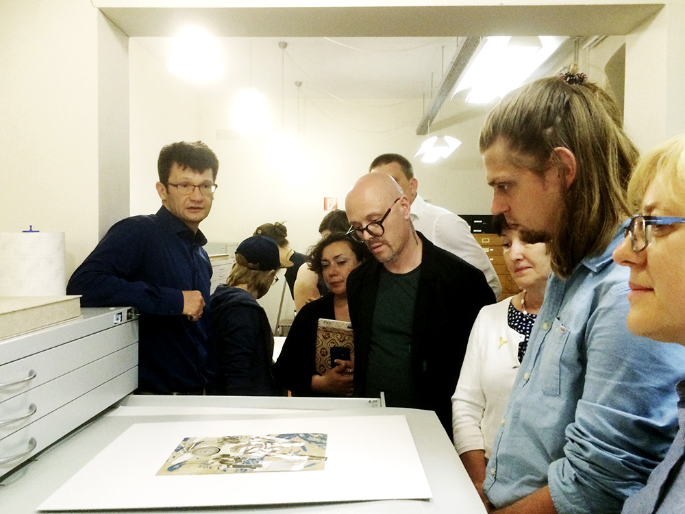
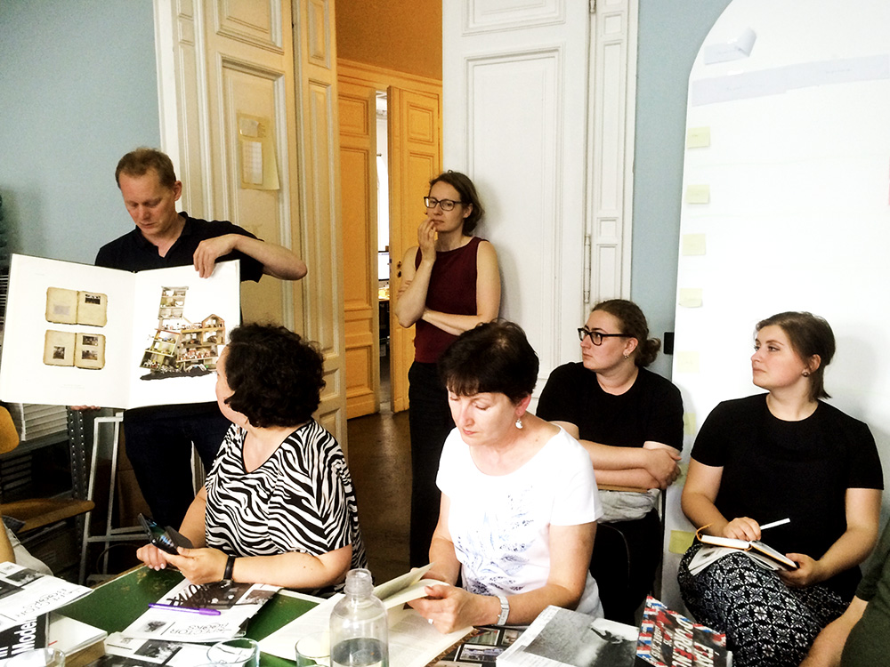

Германия превращает книги по искусству в арт-объекты
Современное книжное оформление далеко ушло от иллюстрирования текста, сейчас это прежде всего работа со шрифтами. Эффектность внешнего вида книги становится основной задачей книжного дизайна

Издание и распространение литературы по искусству — этим вопросам была посвящена поездка группы отечественных издателей, редакторов и менеджеров книготорговли в Германию, организованная Центром немецкой книги в Москве, существующим с 1993 года российским представительством Франкфуртской книжной ярмарки. Участники десятидневного тура представляли значимые культурные институции: Третьяковскую галерею, ГМИИ имени А.С.Пушкина, Эрмитаж, Московский музей дизайна, музей «Гараж», МГХПА имени С.Г.Строганова, «Электротеатр „Станиславский“».
За пять дней во Франкфурте с посещением Кельна, Майнца и Касселя и пять — в Берлине с заездами в Ганновер и Лейпциг десять москвичей и двое петербуржцев смогли составить достаточно полное представление о немецком книгоиздании в области искусства. Гостей принимали в издательствах, книготорговых фирмах, музеях, типографии, архивах — везде они становились заинтересованными и равноправными собеседниками для немецких дизайнеров, редакторов, книготорговцев, музейщиков.
Одни из главных вопросов, волнующих европейских профессионалов книжного дела, — наступление Интернета на книгоиздание и происходящие со сменой носителя текста изменения в способах его потребления. Известный афоризм Маршалла Маклюэна «media is the message» сейчас жив, как никогда, но прочитывается в обратном порядке. В 2015 году в Германии было издано 75 тыс. книг, и только 5% из них приходится на электронные. Казалось бы, издателям альбомов и книг по искусству можно не беспокоиться, переход к новой форме существования книги коснется этого сегмента рынка меньше других. Но все равно, по словам Уты Шнайдер, книжного дизайнера с 30-летним опытом работы, «в последний раз такие изменения были 500 лет назад, когда Гутенберг изобрел книгопечатание; теперь мы больше не можем издавать книги, как раньше». Некоторые считают, что дни бумажной книги сочтены и надо скорее переходить на электронные площадки вроде агрегатора Arts+, которому отводится все больше места в павильоне Франкфуртской книжной ярмарки. Другие справедливо полагают, что традиционной книге по-прежнему есть что противопоставить цифровым технологиям: требования к качеству и осмысленности исполнения издания только возрастут.
Современное книжное оформление далеко ушло от иллюстрирования текста, сейчас это прежде всего работа со шрифтами. Эффектность внешнего вида книги становится основной задачей книжного дизайна: точными минималистическими средствами сделать издание запоминающимся, выиграть борьбу за читательское внимание на полке книжного магазина. Франкфуртский фонд «Искусство книги» и его руководитель Катарина Хессе, которая организует конкурс «Самая красивая книга» с внутригерманским и всемирным охватом изданий, продемонстрировала нескольких победителей последних лет. Число книг, способных стать образцом книжного дизайна, не так уж велико: на протяжении всех дней бук-тура одни и те же обложки встречались и на лекции во франкфуртском медиакампусе, где обучаются будущие специалисты книжной сферы, и на выкладке в книжных магазинах, и, наконец, в самих издательствах. Например, книги, вышедшие в Matthes & Seitz, неоднократно получали премию «Самая красивая книга». Издательство, основанное в 1977 году в Мюнхене и теперь расположенное в модном берлинском районе Пренцлауэр-Берг, сочетает в своем портфеле философию — от Жоржа Батая до Мераба Мамардашвили, современную прозу (в том числе девятитомное собрание Варлама Шаламова, выходящее с 2007 года) и естественную историю, начиная с архива энтомолога Жан-Анри Фабра. Силами девяти постоянных сотрудников выпускается 76 названий в год. «Наши книги — ответ на современные процессы в Интернете, поэтому мы используем все возможности полиграфии», — говорят в издательстве.
Среди тенденций сегодняшней книжной моды в Германии есть такие приемы, как подбор в одном книжном блоке разных типов бумаги или смена ширины страниц, что характеризует различные части текста, рукописный шрифт в заголовке, брутально открытый корешок или китайский переплет «бабочкой», дающий свободу при использовании всего книжного разворота. Немецкий книжный дизайн наследует традициям Баухауса в остроте деталей и перфекционизме исполнения. Под переплетом классического вида с названием произведения, сделанном тиснением золотыми буквами на красном прямоугольнике, может скрываться впечатляющий современный дизайн-макет с цветными инициалами и колонцифрами, а вся книга будет помещена в яркий футляр — так выглядят издания серии «Другая библиотека», одним из основателей которой в 1985 году был поэт Ханс Магнус Энценсбергер. Выходящие сейчас в издательстве Aufbau Verlag строго лимитированным тиражом в 4444 экземпляра, книги серии стоят €42. По признанию ее многолетнего редактора Кристиана Дёринга, мировая классическая литература в диапазоне от Лукиана до Михаила Осоргина пользуется популярностью среди юристов, экономистов и врачей: 1,8 тыс. книг распространяются по подписке, а цена на первые тома серии у коллекционеров доходит до €1 тыс. Издания выполнены высокой печатью со свинцового набора, а не офсетом (что в наше время редкость), для переплета каждый раз выбираются оригинальные материалы. Если речь идет о высококачественных изданиях, немецкая книга недешева для покупателей — но цена во всех магазинах всегда будет одинаковой.
Издательская марка лейпцигского Spector Books выглядит весело и несерьезно из-за смайлика, что пририсован под буквами второго слова, превращенными в зрачки. Трое основателей — Маркус Дрессен, Анне Кёниг и Ян Венцель — начинали с книги к выставке Ильи Кабакова «Голоса за дверью», показанной в Лейпциге в 1996 году, и с тех пор считают художника почти что духовным отцом своего предприятия. Spector Books выпускает каталоги выставок и книги по искусству и философии, постоянно издает труды Баухауса в Дессау. Из новинок — каталог проходящего в Мюнстере в этом году очередного фестиваля «Скульптурные проекты» (Skulptur Projekte). Все книги — полсотни названий в год, выходящих средним тиражом в 1 тыс. экземпляров, — находятся на стыке книгоиздания и современного искусства. Издательство постоянно взаимодействует со студентами лейпцигской Высшей школы графики и книжного искусства. Выпускники имеют возможность довести до печати свой диплом, как, например, Under the Radar. Underground Zines and Self-Publications 1965–1975. За работу издательства отвечают трое сотрудников, все остальное происходит дистанционно — и такое положение вещей становится самым точным ответом на волнующий всех вопрос о роли Интернета в книгоиздании.
Участники поездки, близко ощущающие музейную атмосферу, не могли не оценить книжный магазин Walter König, основанный в Кельне в 1969 году: помимо торгового зала, книги распространились на все пять этажей здания, которым теперь управляет сын основателя Франц Кёниг. В главном берлинском магазине известного издательства Taschen полы выложены плиткой знаменитого итальянского дизайнера Джо Понти с синим рисунком, создающим оптическую иллюзию, но голова может закружиться при взгляде на ассортимент издательства. Глава издательского дома Бенедикт Ташен по-прежнему выбирает художников, полагаясь на свой вкус. Так, еще недавно бывший представителем субкультуры фотограф Вольфганг Тильманс вошел в «модельный ряд» издательского дома между «Большой книгой пениса» и «Шедеврами Ренессанса в деталях».
На стену рабочего кабинета в архиве берлинской Академии художеств приколот фотопортрет Джона Хартфилда. Архив и библиотека включают 550 тыс. томов и основанный в 1999 году Кабинет каллиграфии, но самым сильным впечатлением, превзошедшим осмотр 14-й Documenta в Касселе, стало знакомство с архивом Джона Хартфилда, который поступил в Академию художеств по завещанию художника. Как рассказала его хранитель Анна Шульц, в следующем году планируется сделать доступным онлайн-каталог собрания, насчитывающего 6,2 тыс. произведений и личных вещей, а ретроспектива знаменитого дадаиста, мастера фотомонтажа и политического плаката готовится к 2019 году.
Сейчас картина «Женщина — охра» уже передана сотрудникам музея Аризоны и готовится к реставрации.
Автор: Павел Герасименко15 АВГУСТА